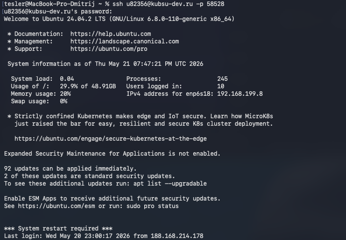
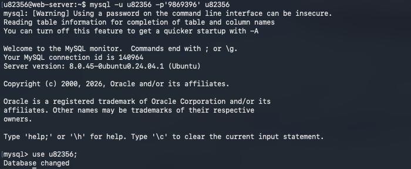
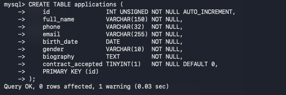
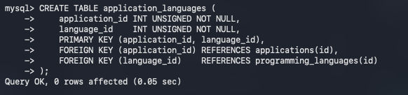
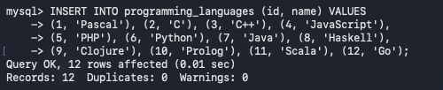
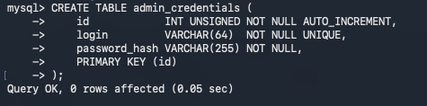
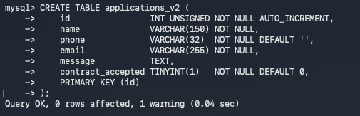
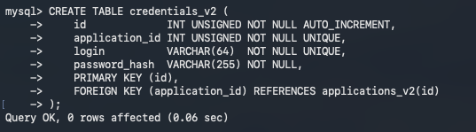
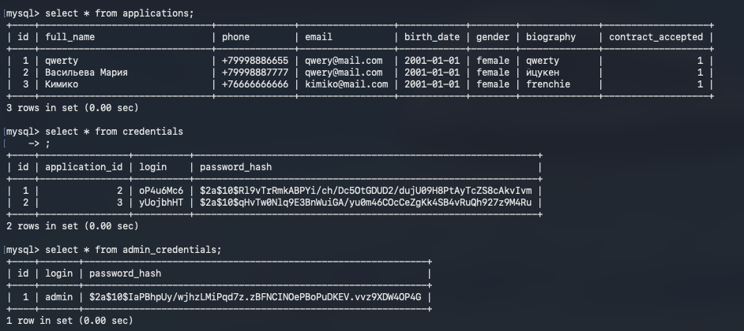
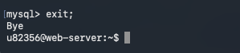

Развёртывание анкеты
последовательность действий на сервере
1. Подключение по SSH

Устанавливается защищённое соединение с сервером
kubsu-dev.ru. После ввода пароля открывается удалённая командная оболочка Ubuntu, через которую мы будем управлять сервером.
Команда:
ssh u82356@kubsu-dev.ru -p 58528
2. Вход в MySQL

Запускается клиент MySQL с указанием пользователя и пароля, затем выбирается база данных
u82356, в которой будут создаваться таблицы.
mysql -u u82356 -p'9869396' u82356, затем use u82356;
3. Таблица applications

Создаётся основная таблица для хранения анкет. В ней будут поля: ФИО, телефон, email, дата рождения, пол, биография и согласие с контрактом. Поле
id — первичный ключ, автоинкремент.
CREATE TABLE applications (
id INT UNSIGNED NOT NULL AUTO_INCREMENT,
full_name VARCHAR(150) NOT NULL,
phone VARCHAR(32) NOT NULL,
email VARCHAR(255) NOT NULL,
birth_date DATE NOT NULL,
gender VARCHAR(10) NOT NULL,
biography TEXT NOT NULL,
contract_accepted TINYINT(1) NOT NULL DEFAULT 0,
PRIMARY KEY (id)
);
4. Справочник programming_languages

Таблица-справочник, в которой будут перечислены все возможные языки программирования. Позволяет не хранить названия языков в каждой анкете, а ссылаться на ID.
CREATE TABLE programming_languages (
id INT UNSIGNED NOT NULL AUTO_INCREMENT,
name VARCHAR(64) NOT NULL,
PRIMARY KEY (id)
);
5. Связующая таблица application_languages

Реализует связь «многие ко многим» между анкетами и языками программирования. Одна анкета может выбрать несколько языков, и один язык может быть выбран в нескольких анкетах. Внешние ключи обеспечивают целостность данных.
CREATE TABLE application_languages (
application_id INT UNSIGNED NOT NULL,
language_id INT UNSIGNED NOT NULL,
PRIMARY KEY (application_id, language_id),
FOREIGN KEY (application_id) REFERENCES applications(id),
FOREIGN KEY (language_id) REFERENCES programming_languages(id)
);
6. Наполнение справочника языков

В таблицу
programming_languages добавляются 12 записей с идентификаторами, которые соответствуют значениям в HTML-форме. Это позволяет при сохранении анкеты сразу использовать числовые ID языков.
INSERT INTO programming_languages (id, name) VALUES (1, 'Pascal'), (2, 'C'), (3, 'C++'), (4, 'JavaScript'), (5, 'PHP'), (6, 'Python'), (7, 'Java'), (8, 'Haskell'), (9, 'Clojure'), (10, 'Prolog'), (11, 'Scala'), (12, 'Go');
7. Таблица credentials

Таблица для хранения учётных данных пользователей. Связывается с анкетой через
application_id (один к одному). Логин уникален, пароль хранится в виде хеша для безопасности.
CREATE TABLE credentials (
id INT UNSIGNED NOT NULL AUTO_INCREMENT,
application_id INT UNSIGNED NOT NULL UNIQUE,
login VARCHAR(64) NOT NULL UNIQUE,
password_hash VARCHAR(255) NOT NULL,
PRIMARY KEY (id),
FOREIGN KEY (application_id) REFERENCES applications(id)
);
8. Таблица admin_credentials

Таблица для хранения учётных записей администраторов. Данные нельзя ввести через анкету — только разработчик может добавлять или удалять админов. По этим данным администратор входит в панель управления.
CREATE TABLE admin_credentials (
id INT UNSIGNED NOT NULL AUTO_INCREMENT,
login VARCHAR(64) NOT NULL UNIQUE,
password_hash VARCHAR(255) NOT NULL,
PRIMARY KEY (id)
);
9. Таблица applications_v2 (для проекта «Друпал кодер»)

Для нужд дополнительного проекта создана таблица
applications_v2. По структуре она похожа на applications, но имеет несколько иные поля, адаптированные под требования проекта «Друпал кодер». Связи с другими таблицами аналогичны оригинальным.
10. Таблица credentials_v2 (для проекта «Друпал кодер»)

Совместно с
applications_v2 создана таблица credentials_v2 для хранения логинов и хешей паролей. Принцип работы полностью идентичен оригинальной credentials, но привязана к applications_v2.
11. Проверка работы анкеты — запись данных в БД

После заполнения и отправки анкеты данные записываются в таблицы
applications и credentials. Запросы SELECT * FROM applications; и SELECT * FROM credentials; показывают сохранённые анкеты и соответствующие учётные записи. Видно, что пароли хранятся в виде хешей.
SELECT * FROM applications; и SELECT * FROM credentials;
12. Выход из MySQL

Команда
exit; завершает сеанс MySQL и возвращает в командную оболочку сервера.
exit;